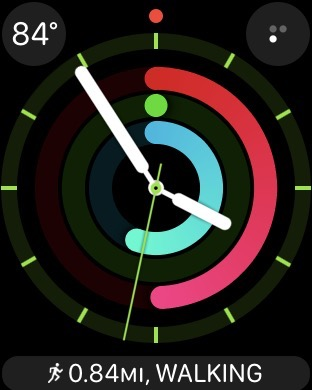
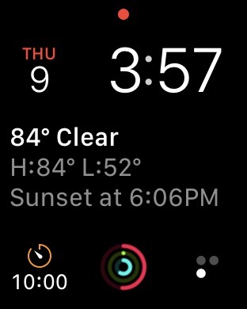
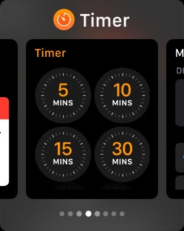

March 2017
4 PSA’s
Mary Anne points us to an article about a misplaced iPhone. The person who found it could ask Siri for information, revealing personal data. This is not a bug, it’s a preference. This is good or bad, depending on your perspective: it’s a daily convenience for you, as you can avoid unlocking your iPhone to ask Siri something, and it could help the finder return a lost iPhone. If you want to avoid this, you must disable Siri when the screen is locked. Go to Settings > Siri > Access Siri when locked, and turn the option off.
Gail points us to Everything you need to know about Cloudbleed, the latest internet security breach, Cloudfare’s vulnerability. Who is Cloudfare? You might not be using them directly but they provide services and security to many other internet-based companies and services, including some you might be using. As a precaution, it's a good idea to update your passwords, at least some of your key ones and to set up 2-factor authentication for IDs and services that are important to you. (Note: Many iPUG members use 1Password. 1Password was NOT affected by this vulnerability, as they noted in a blog post to users.)
Gail also reminds us that Google continues to track and record all your digital activity, as we have discussed in the past. If you do not want this, learn how to delete old data and pause it for your future activity, without ending your use of Google services.
Betty has a follow-up to our VPN discussion from last month’s meeting, pointing us to International Travel News magazine, where author Jim Doyle writes, ` When I was in Uzbekistan in April 2016 and attempted to review my checking account, it triggered my bank to block further online access to my account, as they suspected fraud. I had alerted the bank to all of the countries I would be visiting on my trip to Central Asia, but I was unaware that my VPN uses a server in the Netherlands. Once I was able to call the bank via Skype and tell them I had used a VPN, my access was restored. For future foreign trips, I’ll be sure to mention the VPN in addition to the countries I’ll be visiting, after confirming where the VPN’s servers are.' This is a good reminder for those who use VPN services: either manually choose a server in the US, if possible, or notify financial institutions in advance of your trip.
iOS and Apple news
Apple’s WWDC 2017 will take place June 5–9. We can expect a Keynote address that will include previews of iOS 11 and macOS future releases (the releases will likely be in September, if past trends continue).
Apple Park will open in April: the official announcement by Apple. Macworld describes some extra tidbits, including the buttons on elevators.
[ RUMOR ] A possible iPad event to be held on April 4 at Apple Park, reports AppleWorld.
[ RUMOR ] A possible March Event is being speculated based on a Japanese source, to announce new iPads, a new iPhone SE, and more.
A new ad for Carpool Karaoke, The Series, coming to Apple Music soon:
Also, two new iPhone 7Plus ads have been released, focusing on Portrait Mode:
and
Apple has also released 3 new ads for iPad Pro that are answering a short question posed via tweet:
and
and
Apple has been assigned a new patent detailing modular watch accessories disguised as bracelet links, reports AppleInsider. `Link design including batteries, photovoltaic cells, electricity generators, cameras, haptic output devices, speakers and more.'
[ RUMOR ] New watch Series 3 is said to have new glass-film touchscreen, and is expected in the second half of this year.
HARMAN pioneers first-ever integration of Apple CarPlay through wireless connectivity, announced Harman in a press release.
Tim Cook says Fake news is killing people's minds, in an interview with The Telegraph. He said `All of us technology companies need to create some tools that help diminish the volume of fake news.'
Illustrator Liza Donnely live-tweeted the Oscars, using an iPad and the app Paper.
iOS apps & widgets
Century Fox has released Movie of the Day, a free app. It offers one film deal from the studio’s catalog every day. The app is available for iOS and also appleTV.
Use your eyes and ears to complete the whimsical puzzler Samorost 3, writes Macworld in their review of this game. They call it a work of art and an intriguing puzzle.
Hours is an app to help you track your time as you go about your day. It's excellent for those who have to track billable hours or track time spent on projects, and so on. You could even use it for personal productivity tracking. It comes with a Watch app.
Gymatic is an exercise app that automatically tracks your exercises via your Watch. It can identify repetitions and provides your with statistics on your iPhone. Here is how it works:
Many have been fans of Alto's Adventure. The developers have a new game coming this summer, Alto's Odyssey. Here is the trailer:
iDevices has released v3.0 of their app that controls iDevices smart-switches, light sockets, thermostats, and other devices for the home. It's a significant upgrade, with more dynamic scheduling and triggers. For example, you can now set the lights to come on as you arrive home, you can get energy usage reports and more.
Castro is an app for managing and listening to podcasts. The design is intended to help you manage having many podcasts so you do not waste time with that but it helps you find content you like.
tips & tricks
Some more iOS 10 hidden features, including how to get your iPhone to announce who is calling you:
Plus, a quick overview of 12 other iOS 10 features that you might have forgotten:
15 iMessage Tips that everyone should know, from AppAdvice.
6 Essential Settings to make your iPhone and iPad display easier on the eyes, writes Macworld. How to: Change text size, Make text bold,
13 iPhone settings you can change with Siri, listed by AppAdvice. This saves you the trouble of wading through the Settings app.
Yes, if you have iCloud Photo Library enabled, and you delete a photo on iOS or a Mac, it's deleted everywhere, writes Macworld.
watch
Since watchOS 3 was released last fall, it is possible to arrange watch faces for work, play, music, and every occasion in between, writes David Chartier. The key is that you can easily sweep between watch faces the same way you swipe between pages on an iPhone or iPad.
Olga has been using the same approach, with some examples of customized watch faces, below. Complications on the watch are shortcuts to apps. She modifies these watch faces (or adds a new one) every so often to adjust to new needs (such as for travel). Apple has made it very easy to take advantage of this flexibility to customize.

Above, this the watch face Olga uses in the mornings to see the activity rings and for easy access to Activity app via complication (shown at the bottom; it displays the most recent activity type and it’s a shortcut to the Workout App). The complication at the top left is Dark Sky which displays the temperature and is a shortcut to the app for the fuller forecast. The complication on the upper right is Streaks which lets the user set up 6 goals, with each dot representing a goal; bold dots indicate goal completion.
The next watch face is used when running errands, for easy access to Any List. The pretty flowers change every time a user checks the time. Olga often changes this to show animated butterflies or jellyfish.
Minnie, above, is a watch face Olga uses just for fun. When tapped, Minnie reads the time out loud (preference in Settings). Minnie’s skirt color is customizable. Below Minnie this minimalistic watch face is used during evening events and dressier occasions.
The two screenshots above are examples of the `Favorite Album’ watch face. It cycles through a user’s designated favorite album every time a user looks at the time (these are paintings created on an iPad using ArtRage and Paper, respectively, and imported in the favorite album on the iPhone). Notice that the font’s color is different in each case: it is automatically adjusted by the Watch in order to be easily readable vs. the background image. Notice also that many colors choices would allow good contrast for reading, however Apple’s automation chooses colors within the palette of the image. Details like these are a delight on the Watch.

This last watch face is the `Modular’ option. It’s the watch face that allows the maximum number of complications. Olga used to use it a lot before watchOS 3 was released because it enabled easy access to many shortcuts. However, now that it’s so easy to swipe between watch faces, Olga prefers to use the other ones listed above.

Olga no longer uses a complication to access the timer (as shown in the Modular watch face above). Instead, she has customized the Dock to include Timer, as shown above. This is an example of ow watchOS 3 improved the flow of information and shortcuts on the watch.
The blossoming new world of watch apps, writes David Chartier. He gives good examples of apps he uses on the Watch, including: Drafts, Hours, AnyList, and more.
Olga’s view: It is easy to add too many apps on the watch and not use them. A little goes a long way: the watch is a small device and many apps belong more naturally on the iPhone itself. However, judicious use of a few watch apps can be wonderful. The examples David Chartier mentions above showcase this. Choose the apps that matter to you and customize your watch faces.
Some 3rd party apps that offer a Watch companion app use too much battery. This can happen when there is too much communication between the iPhone and the watch occurring the background (not initiated by the user). However, most 3rd party apps are mindful of this.
gadgets & accessories
Roger S. told us about 2 new iPhone cases he has been using: iPhone case by Vagobu, which provides an anti-slip texture and rugged support, plus a handy kickstand, and Juice Pack wireless charging case by Mophie, which is both a case and a battery pack, letting you recharge wirelessly. The Juice Pack is surprisingly slim and light.
Roger also told us about Instamic, a small gadget that is both a `smart’ microphone and an audio recorder. It started out as an IndieGoGo project, and now it is becoming more available as a regular product. Roger has been very happy with it. It can be used by anyone who needs to record sound, for bloggers, journalists, for school and work projects, or simply to document the sounds while traveling. There are water-resistant and water-proof versions also.
Instamic - How it works from Instamic on Vimeo.
Accessories for the iPhone Photographer, a useful list compiled by GearAdvice.
Smart gadgets continue to emerge: Hair Coach is a hair brush by Kerastase. It connects to an app and is designed to assess your hair’s quality and give you feedback on the effectiveness of your `hair care routines'.
Roger H. points us to COVR which started as a Kickstarter project. It is an iPhone case that gives you cover for taking photos at a different angle than it appears. It results in more candid photos of people, kids, pets, and street scenes. You can find COVR on Amazon.
iPhone cases by Toddy Gear have been released, using some popular designs they have offered for their microfiber stands.
If you have a Macbook that uses a magsafe power connector, Kevin suggests Snuglet. This is a little gizmo that increases the magnetic connection to make it less easy to disconnect when you do not want it to.
Traveling with iPads and accessories, plus facing more airline fees for bags? Here is an idea to let you carry on your personal items without hassles:
privacy & security
WikiLeaks’ CIA document dump shows agency can compromise Android and smart TVs, reports Macworld.
`More than 99 percent of all malware designed for mobile devices targets Android devices', reports SafeAndSavvy. There are two main reasons: 1). Android/Google have a relatively open system for distribution of apps, whereas Apple iOS apps are reviewed by Apple, and 2). `Apple’s iOS distribution and upgrade model is far superior to Android'.

Data Selfie: Examples of the unsettling amount of info Facebook knows about you. Install a free Chrome extension that shows you what Facebook can infer from your use of Facebook. Here’s an overview:
In reality, of course, Data Selfie is showing you some examples. Facebook does a lot more that this.
If you want to stop using Facebook out of privacy concerns, here is how to permanently delete your Facebook account.
A US-born NASA Scientist was detained at the border until he unlocked his phone, reports The Verge. The scientist was pressured to give his iPhone PIN. The phone belonged to NASA and had sensitive info on it.
If you travel internationally and have concerns about the privacy of your personal data on your devices, read this: I will never bring my phone on an international flight again, writes a programmer. He also points out you can erase your devices just prior to your return.
`Aisles Have Eyes' warns that brick-and-mortal stores are watching you, says an expert on an NPR interview on Fresh Air. We have grown accustomed to being `watched' online, but this is often happening at physical stores via smartphones. They follow you via Bluetooth and via apps that use Bluetooth and/or location services (assuming you permit them). They track your movements and as a result they might offer discounts or higher prices or incentivize you to buy something or to buy an alternate brand. Read the interview or listen to the radio interview:
general apps & services
Self-driving busses are being tested in CA, reports Reuters.